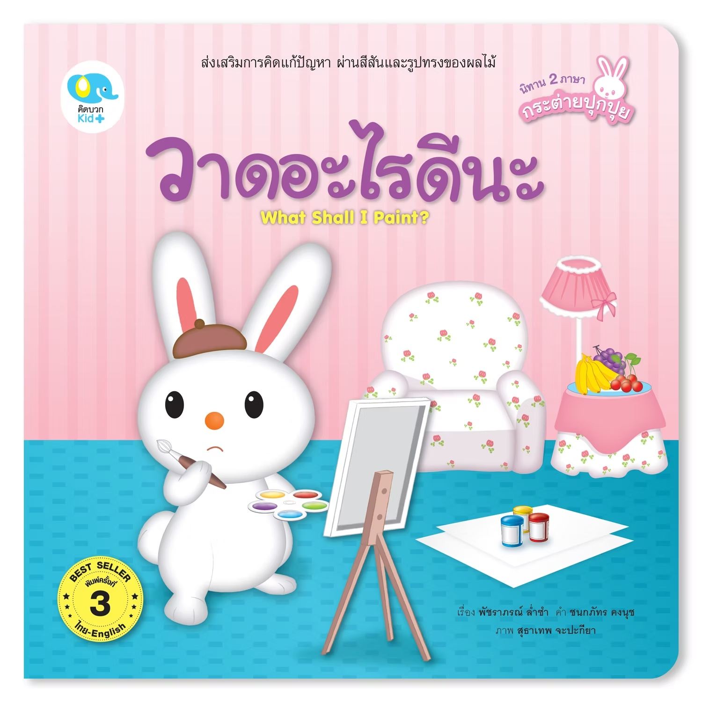

ปลุกจินตนาการ
สวนลึกลับ คฤหาสน์ และสูตรสมุนไพรชวนให้ผู้อ่านสร้างภาพโลกแฟนตาซีขึ้นในใจ
 จาเรตต์ · ผู้ค้นพบสวนลับ
จาเรตต์ · ผู้ค้นพบสวนลับ

A LITTLE JOURNEY INTO A MAGIC GARDEN
เมื่อจดหมายลึกลับพาไปพบคฤหาสน์ของแม่มดสมุนไพร การผจญภัยของจาเรตต์ในสวนที่ไม่ธรรมดาจึงเริ่มต้นขึ้น
ค่อย ๆ เปิดหน้ากระดาษ แล้วออกเดินทางไปด้วยกัน
เริ่มอ่านบันทึกจากสวนลับจดหมายฉบับหนึ่งที่เปลี่ยนทุกอย่าง
หนังสือเล่มนี้เกี่ยวกับอะไร?
บางครั้ง การผจญภัยก็เริ่มต้นจากจดหมายเพียงฉบับเดียว
จาเรตต์ เด็กหญิงที่ต้องเดินทางไปทั่วโลกกับพ่อแม่ซึ่งเป็นนักดนตรี ได้รับจดหมายแจ้งว่าเธอมีสิทธิ์รับมรดกเป็นคฤหาสน์โทแพซ บ้านเก่าของแม่มดสมุนไพรผู้ล่วงลับ
แต่ก่อนจะได้ครอบครองคฤหาสน์ จาเรตต์ต้องทำภารกิจให้สำเร็จสองข้อ ได้แก่ อาศัยอยู่ที่นั่นให้ครบหนึ่งสัปดาห์ และทำให้คฤหาสน์ยอมรับเธอ เรื่องราวจึงเริ่มต้นขึ้นท่ามกลางสวนลึกลับ สมุนไพร และความมหัศจรรย์ที่รอให้ค้นพบ
เรื่องย่อนี้ไม่เปิดเผยตอนจบ เพื่อเก็บความลุ้นไว้ให้ผู้อ่านค้นพบด้วยตัวเอง
เรื่องราวแฟนตาซีเยาวชนจากญี่ปุ่น โดย Yasuko Ambiru
ลองดูว่าคุณเป็นนักอ่านแบบไหนในสวนเวทมนตร์แห่งนี้

ของสะสมจากสวนลับ
เหมาะกับเด็กวัยประมาณ 7–12 ปี และผู้อ่านที่ชอบเรื่องราวแฟนตาซีโทนอ่อนโยน โดยเฉพาะคนที่สนใจสวนลึกลับ ดอกไม้ สมุนไพร สัตว์น่ารัก และตัวละครที่ค่อย ๆ เรียนรู้ระหว่างการผจญภัย
อายุที่แนะนำเป็นแนวทางเบื้องต้น ความชอบและความคล่องในการอ่านของแต่ละคนอาจแตกต่างกัน

จำเป็นต้องรู้เรื่องสมุนไพรหรือเวทมนตร์มาก่อนหรือเปล่า?
ไม่จำเป็นต้องมีพื้นฐานเฉพาะมาก่อน ผู้อ่านสามารถเริ่มทำความรู้จักโลกของเรื่องผ่านจาเรตต์และภารกิจที่เธอต้องเผชิญได้เลย ความรู้เกี่ยวกับสมุนไพรไม่ใช่เงื่อนไขในการติดตามเนื้อเรื่อง
หากเป็นนักอ่านวัยเริ่มต้น อาจค่อย ๆ อ่านทีละบทและใช้ภาพประกอบช่วยจินตนาการไปพร้อมกัน ผู้ปกครองสามารถอ่านร่วมกับเด็กและชวนพูดคุยถึงตัวละครหรือสิ่งที่พบในสวนได้เช่นกัน
เริ่มอ่านได้จากเล่มนี้
เป็นเล่ม 1 ของเรื่องชุดมหัศจรรย์สวนเวทมนตร์
นอกจากความมหัศจรรย์ ยังมีบางสิ่งที่ชวนให้เก็บกลับไปคิดต่อ
แล้วอ่านเรื่องนี้อาจได้ประโยชน์อะไรบ้าง?

สวนลึกลับ คฤหาสน์ และสูตรสมุนไพรชวนให้ผู้อ่านสร้างภาพโลกแฟนตาซีขึ้นในใจ
เรื่องราวผสานเวทมนตร์เข้ากับสมุนไพรและสิ่งมีชีวิต ชวนให้สังเกตคุณค่าของธรรมชาติรอบตัว
ภารกิจของจาเรตต์ชวนคิดถึงการเอาใจใส่สถานที่ สิ่งมีชีวิต และความรู้สึกของผู้อื่น
ประเด็นเหล่านี้เป็นข้อคิดที่เรื่องราวชวนให้ตีความ ไม่ใช่ผลลัพธ์ที่รับประกันว่าจะเกิดกับผู้อ่านทุกคน
บันทึกรายละเอียดเล่มนี้ไว้ เผื่ออยากกลับมาค้นหาอีกครั้ง
เรื่องราวเล็ก ๆ ที่อาจทำให้การอ่านครั้งต่อไปพิเศษขึ้น
พร้อมออกเดินทางหรือยัง?
หากอยากรู้ว่าจาเรตต์จะผ่านภารกิจของคฤหาสน์ได้อย่างไร ลองไปดูรายละเอียดหนังสือจากสำนักพิมพ์กันต่อ
ดูหนังสือที่ Nanmeebooksลิงก์จะเปิดหน้าเว็บไซต์ Nanmeebooks ในแท็บใหม่